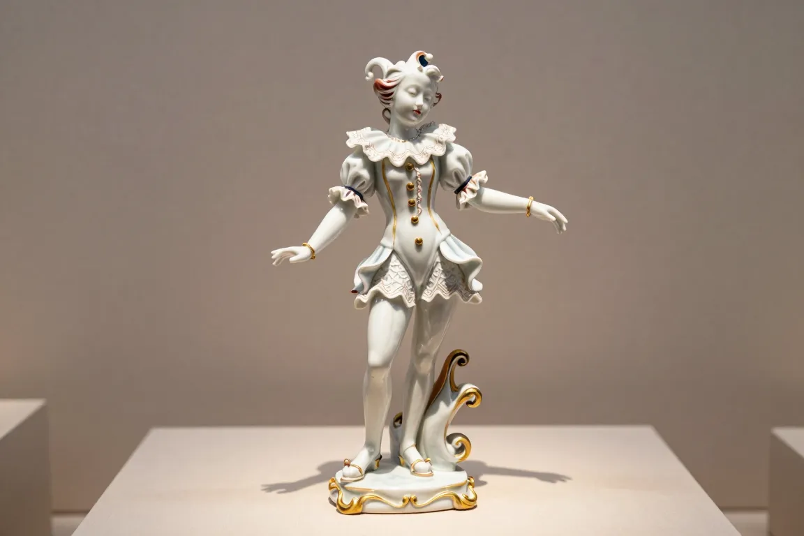

Små håndmalte porselensfigurer av elskende, gjetere, harlekiner og aper, laget til hoffets dessertbord. De er hvite, blanke og lette, i S-kurver med blonder, blomster og forgylling.

Kjerneidé
En porselensfigur er en leke på en prinsens bord: hvit, blank og lett gjør den en hoffscene til et lite, lyst stykke teater.
Designprinsipper
Modellér figuren i en vridd S-kurve, med hodet vendt mot hoften.
Hold figuren 10 til 30 cm høy, med en sokkel som er en liten haug eller en snirklet plint.
Støp figuren av mange små delformer, og sett delene sammen med slipp.
Dypp ekte blonder i slipp og drapér dem på kjolen, slik at de brenner til en stiv hvit blonde.
Legg til blomster, små fugler og blader for hånd på sokkelen og i håret.
Mal figuren med overglasuremaljer i klare, lette farger, og fest dem ved 700 til 800 °C.
Legg til forgylte snirkler på sokkelen og i fållen, og brunér dem etter den tredje brenningen.
Velg en scene fra scenen eller hoffet: Harlekin, Columbine, en kavaler, en gjeterpike, en ape i parykk.
Antimønstre
En stiv oppreist figur med begge føttene flatt og armene ned langs siden